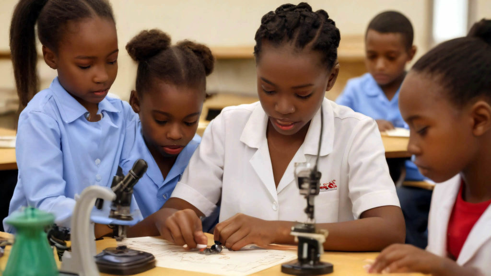

Technology & Digital Inclusion
AYM’s technology focus connects rural students and teachers with computer education and online learning opportunities.
Connecting Mattru Jong to learning and opportunity
AYM’s technology page describes Mattru Jong as a rural Sierra Leonean town with limited high-speed internet access and challenges that include youth unemployment and illiteracy.
In this context, technology can help expand education, connect communities to online resources and support participation in the digital economy.

Expanding access for students and teachers
AYM describes Project MJ 2015 as a computer education program intended to provide students and teachers in Mattru Jong with virtual computer learning access.
Computer education
Build students’ and teachers’ familiarity with computers and digital learning.
Online learning access
Virtual classes can connect rural learners with resources beyond their immediate area.
Digital participation
Technology can support education, communication, productivity and access to opportunity.
Community infrastructure
AYM’s page describes a social enterprise and business incubator center in Mattru Jong with around-the-clock electricity using solar, wind and diesel power.
Technology that supports learning
Digital tools can help educators and learners connect, share resources and take part in online classes.
Still have questions?
Can't find the answer you're looking for? Please chat to our friendly team.